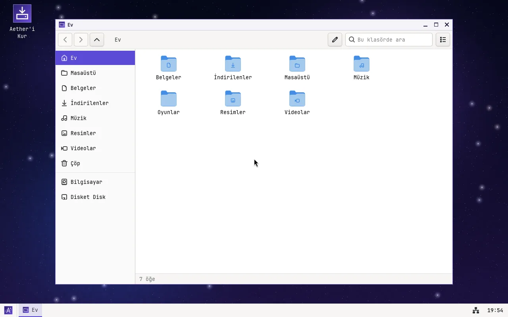
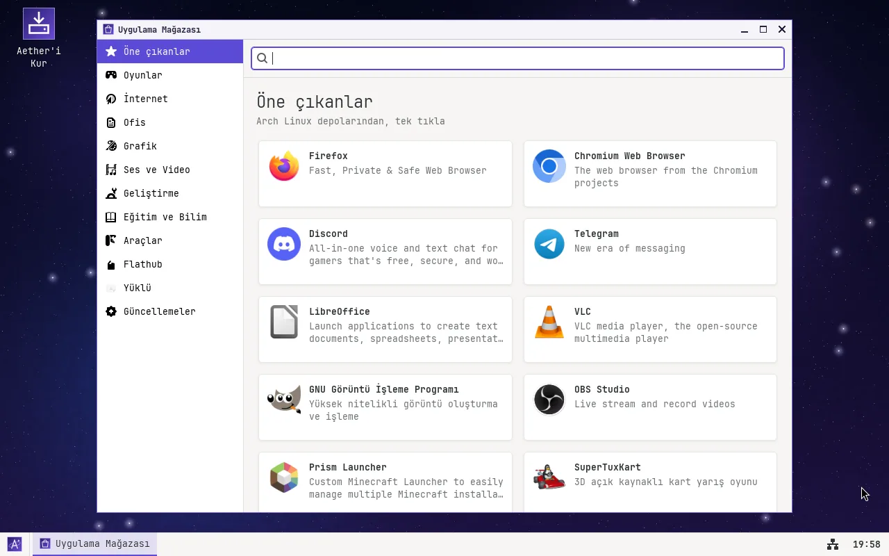
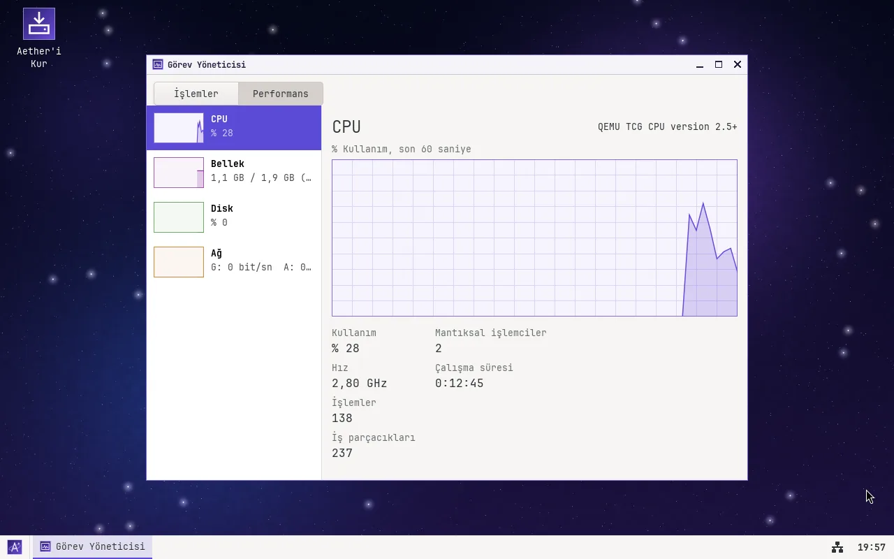
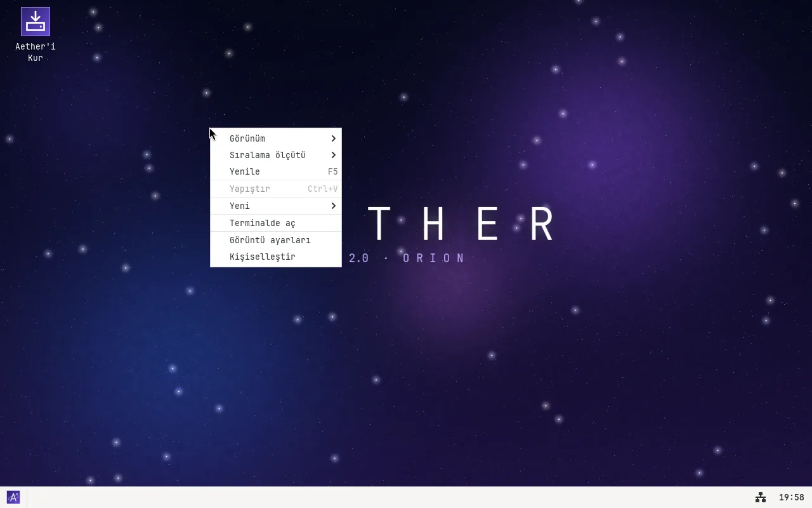
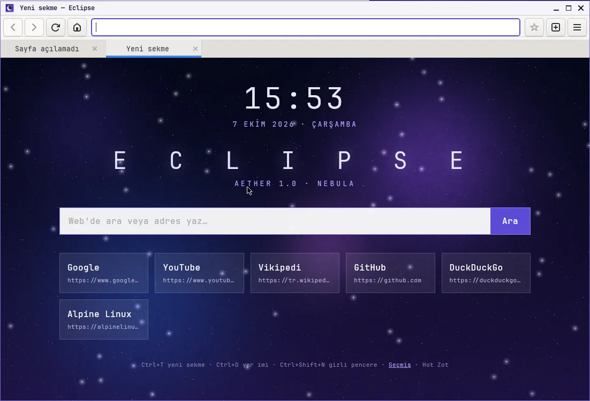

Merak ettiğim için kendi işletim sistemimi yapıyorum.
Merhaba, ben Hot Zot. Aether, Arch Linux üzerine kurduğum küçük, Türkçe bir Linux dağıtımı. Pencere yöneticisinden dosya yöneticisine, uygulama mağazasından web tarayıcısına kadar içindeki programların çoğunu kendim C ile yazdım.


Ne yapıyorum
Bir işletim sisteminin içinde neler döndüğünü görmek istedim. Sonra iş büyüdü ve kendi kurulum programı, ayarları, hatta kendi tarayıcısı olan bir şeye dönüştü. Hepsi açık kaynak.
Aether Linux
Açılışta RAM'den çalışan, beğenirsen diske (istersen Windows'un yanına) kurulan bir Linux dağıtımı. Arch depoları ve Flathub tek tıkla.
Masaüstü uygulamaları
Yörünge pencere yöneticisi, görev çubuğu, dosya yöneticisi, uygulama mağazası, görev yöneticisi, terminal ve kurulum programı. Hepsi C, GTK 3 ve Xlib ile.
Eclipse tarayıcı
WebKit tabanlı kendi web tarayıcım: sekmeler, yer imleri, gizli pencere ve reklam engelleyici. Windows 10/11 sürümü de var.
İçinde ne var
Arch Linux tabanı ve güncel Linux çekirdeği üzerinde, Aether'e özel uygulamalar. Arayüz Türkçe, İngilizce de var.
Uygulama Mağazası
Arch depoları ve Flathub bir arada: Firefox, Discord, Steam, LibreOffice, OBS... tek tıkla.
Aether Dosyalar
Kopyalama ilerlemesi, çöp kutusu, sürükle bırak, "Birlikte aç".
Görev Yöneticisi
Ctrl+Shift+Esc. İşlemler ve CPU, bellek, disk, ağ grafikleri.
Oyun Modu
Steam ve ekran kartı sürücüsü tek tıkla, performans modu.
Yörünge masaüstü
Görev çubuğu, masaüstü simgeleri, Windows'takine benzer sağ tık menüleri, açık ve koyu tema.
Kurulum programı
Dil, klavye, kullanıcı, disk. Windows'un yanına da kurabiliyor.
Günlük işler
Wi-Fi, ses, bildirimler, Ayarlar'da Sürücüler sayfası. Sekmeli terminal, metin düzenleyici, hesap makinesi, Mayın Tarlası.
Geliştiriciler için
gcc, make ve sudo pacman -S hazır. Sanal makinelerde 3D hızlandırma.








İndir
Şu anki sürüm 2.0 "Orion". Daha hafif bir şey istersen Alpine tabanlı 1.1 "Nebula" da duruyor.
| dosya | boyut | ne |
|---|---|---|
| aether-2.0-orion.iso sha256: 1d5cd5a4cdbb0524d3dde89f4c6d397fb06f65e2c15a6b12d1f4a84f070a17bd | 798 MB | 2.0, işletim sistemi, x86_64, BIOS + UEFI |
| aether-1.1-nebula.iso sha256: b7f82d963c78a9e3547463438df34c16fb24ee85f16842e20599a84706650dfa | 485 MB | 1.1, Alpine tabanlı, daha hafif; mağaza yok |
| Eclipse-Windows.zip sha256: 4d2270a6167e861c8e8ca14c2fbdd2f535d514414b7749238180bb74ba35c0f3 | 575 KB | Eclipse tarayıcının Windows 10/11 sürümü |
İndirdikten sonra dosyanın sağlam olup olmadığını kontrol etmek istersen:
sha256sum aether-2.0-orion.iso # Linux certutil -hashfile aether-2.0-orion.iso SHA256 # Windows
Kodların hepsi github.com/1260120047-eng/aether-os adresinde, GPL-3.0 lisansıyla; nasıl derleneceği de orada yazıyor. 1.1'in kodları 1.1 dalında. Tüm dosyalar GitHub sürümler sayfasında.
Kurulum
Ben VirtualBox ve QEMU'da denedim, oralarda sorunsuz çalışıyor.
- VirtualBox'ta yeni makine aç. Tür: Linux, sürüm: Arch Linux (64-bit).
- En az 2 GB RAM (3 GB daha rahat), 10 GB disk ver.
- İstersen Ayarlar → Ekran'da grafik denetleyiciyi VMSVGA yap, 3D hızlandırmayı etkinleştir'i işaretle ve video belleğini 128 MB'a çıkar.
- Ayarlar → Depolama'dan ISO'yu CD sürücüsüne tak, makineyi başlat.
- Açılınca canlı oturuma şifresiz girer. İstediğin kadar dene, sonra masaüstündeki Aether'i Kur'a bas.
- Kurulum bitince ISO'yu çıkarıp yeniden başlat ve kendi hesabınla gir.
Gerçek bilgisayarda Windows'un yanına kuracaksan: önce önemli dosyalarını yedekle, Windows'ta hızlı başlatmayı ve BitLocker'ı kapat, BIOS/UEFI ayarlarından Secure Boot'u kapat. Kurulum programında "Windows'un yanına kur"u seçip Aether'e ne kadar yer vereceğini ayarlaman yeterli; açılışta Aether ile Windows arasında seçim yapabileceğin bir menü çıkar.
Bilinen sorunlar
- Gerçek donanımda test edilmedi, sadece sanal makinede deneyebildim. Denersen ne olduğunu yazarsan çok sevinirim.
- Secure Boot desteklenmiyor, kapatman gerekiyor.
- Ekran siyah kalırsa önyükleme menüsünden Güvenli grafik'i seç ya da VirtualBox'ta 3D hızlandırmayı kapat.
- VirtualBox'ta altta kaplumbağa simgesi çıkıyorsa Windows'ta Hyper-V açık demektir, her şey çok yavaş çalışır.
- Sadece 64 bit.
Sürüm notları
- 2.0 "Orion" · 9 Ekim 2026
- Arch Linux tabanına geçildi. Uygulama Mağazası, Aether Dosyalar, Görev Yöneticisi, Oyun Modu, masaüstü simgeleri ve sağ tık menüleri, Windows'un yanına kurulum,
sudo, sanal makinede 3D hızlandırma. - 1.1 "Nebula" · 8 Ekim 2026
- Openbox gitti, yerine kendi pencere yöneticim Yörünge ve görev çubuğu geldi. Bildirimler, Wi-Fi, Sürücüler sayfası, Eclipse'e reklam engelleyici, kendi terminalim. Açılış iki kattan fazla hızlandı.
- 1.0 "Nebula" · 7 Ekim 2026
- İlk sürüm. NetSurf çıkarıldı, yerine Eclipse geldi.
Sırada ne var: kendi oyun motorumun harita editörünü Aether'e taşımak istiyorum. Bir sonraki sürümde büyük ihtimalle o olacak.
Yorumlar
Denediysen ne düşündüğünü yaz: neyi beğendin, ne bozuk, ne eklensin. Yorum için GitHub hesabı gerekiyor; hepsi Discussions sayfasında da duruyor.